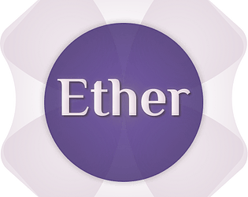
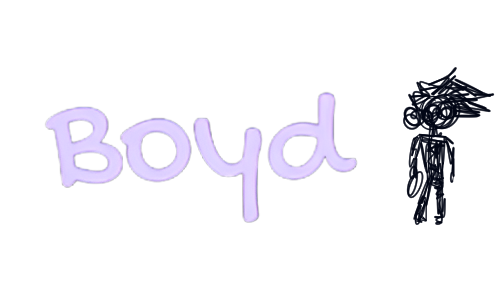
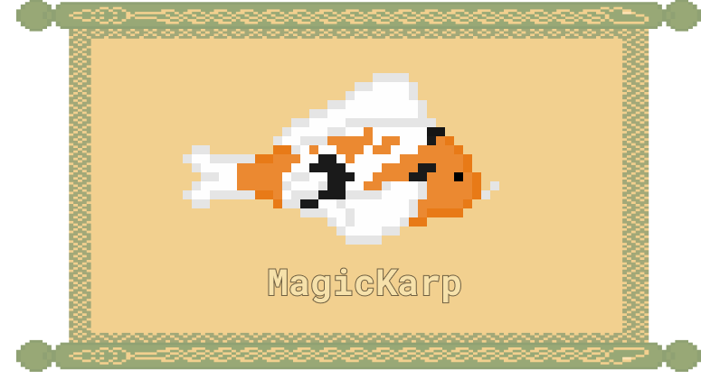

Proyectos Destacados
ETHER
Un juego de aventuras que explora mundos dimensionales para unir la naturaleza. Utilicé Unity
fui la encargada del desarrollo de interacciones y mecánicas.
También realicé la integración de las interfaces (UX/UI), animaciones y el ambiente sonoro.
Ver Proyecto
BOYD
Un juego móvil que sigue la historia de Boyd mientras navega en su subconsciente para despertar. Utilicé Unity y desarrolle en C# para crear
las interacciones de las interfaces y también realicé la integración de animaciones y el ambiente sonoro.
Ver Proyecto
CASA NIVAL

Un proyecto en el que se realizó un modelado 3d en low poly con tématica de invierno,
con un juego perspectivas por medio de las cámaras para mostrar el proyecto. Se realizó en Blender el módelado, en
Illustrator se realizaron las texturas, en Fmod se hicieron las piezas musicales y en Unity se hizo la implementación completa.
Ver Proyecto
LA CAÍDA DEL IMPERIO DE OSCAR

Un proyecto a base de una historia Narrativa que trata de OSCAR, un celular NOKIA,
el cual se enfrenta a la obsolesencia programada. Realicé todo el desarrollo de las mécanicas y el desarrollo UI proceso de interfaces.
Ver Proyecto
AFROKARP
Un juego casual acerca de esquivar obhetos. Fui la encargada del proceso del Diseño UI. Utilicé Unity y desarrolle en C# para crear
las interacciones de las interfaces y también realicé la integración de animaciones y el ambiente sonoro.
Ver Proyecto